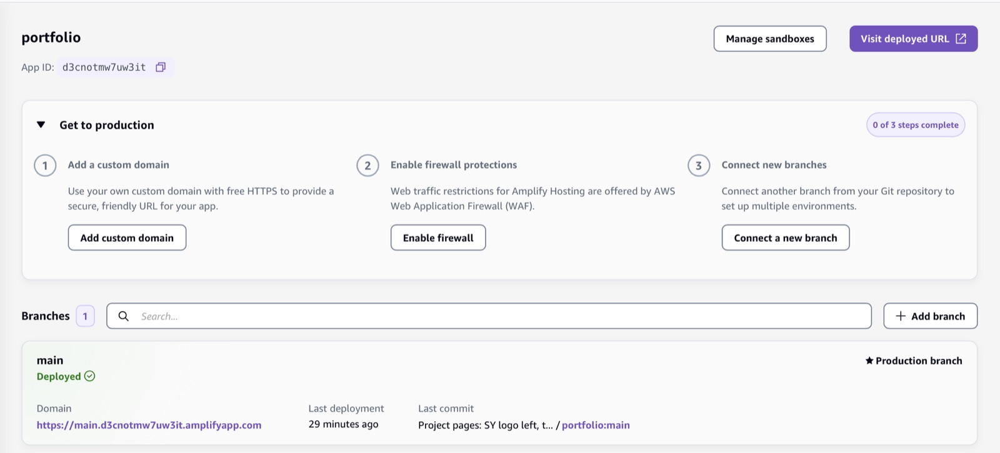
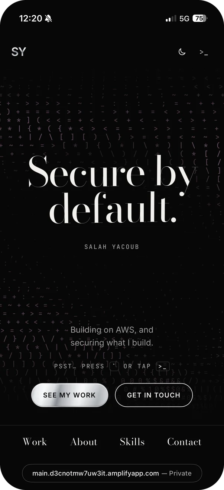
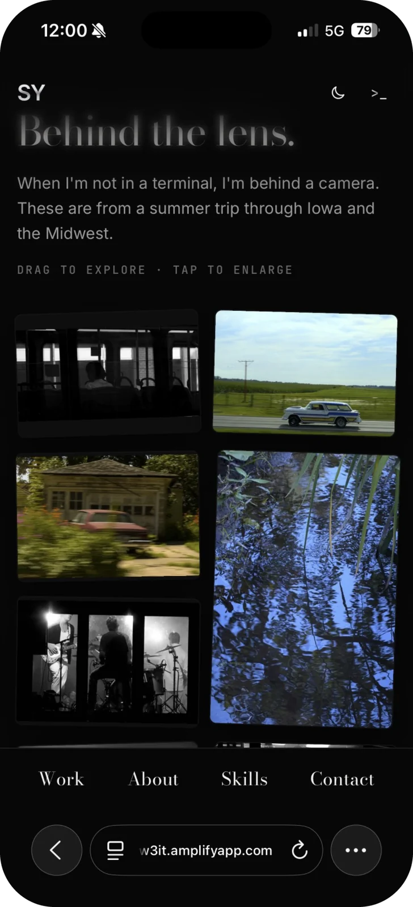

01Overview
This site is my entry for the AWS Builder Center student portfolio hackathon. It's built to feel cinematic while staying fast and easy to navigate. There's a hidden way in for curious visitors.
02What I built
- The hero line field: a canvas of flowing lines that bulge around your cursor, with a purple orb that follows it. The lines fade out at the edges.
- salah.sec terminal: a working in-browser terminal (press ` or tap
>_) with commands likehelp,whoamiandls projects. - A three-stage capture-the-flag: visitors find a hidden incident folder and work it like a real one: spot the root sign-in without MFA in a CloudTrail log, find the statement that breaks least privilege in an IAM policy, then decode a leftover payload (base64 → ROT13). Each correct answer unlocks one piece of the flag. The source holds the puzzle, hashes of the answers and encrypted pieces, so the flag never appears in it as readable text.
- Deployment: the code lives on GitHub and deploys automatically through AWS Amplify Hosting on every push.
03Security
- I directed an AI coding agent (Claude Code, with the AWS Agent Toolkit) that had access to my AWS account. That access goes through a dedicated IAM user protected with MFA, not the root account.
- I started on root to save time, then switched. That's the same lesson GuardDuty taught me on my S3 project.
- I reviewed every file before pushing to a public repo to make sure no secrets were included.
04Challenges
My first attempt at a full redesign was one giant prompt, and it broke the site. I rolled back with git and rebuilt in small steps (layout, then the line field, then interactions), committing after each one. That's how it finally came together.
05What I learned
- How to direct an AI agent well: specific instructions, small steps, review everything and keep a rollback point.
- How Amplify packages what I built by hand on my S3 project (storage, CDN, HTTPS) into a managed workflow.
06Gallery






